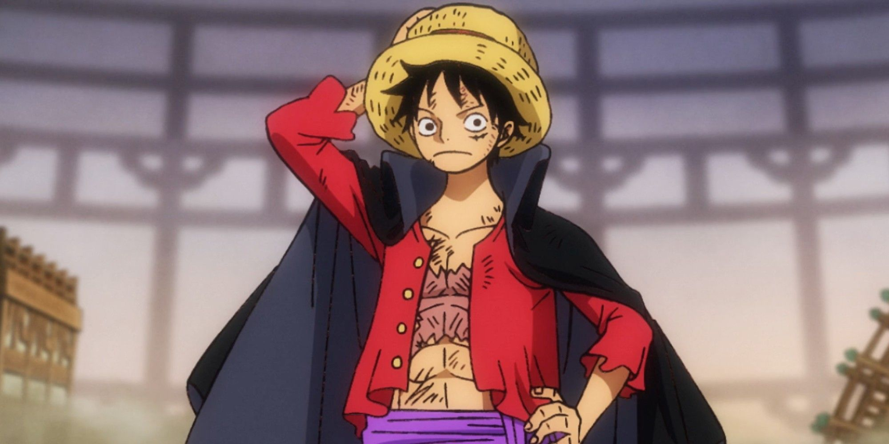
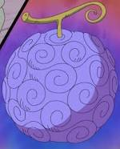

first page
luffy


Monkey D. Luffy, also known as "Straw Hat" Luffy, is a fictional character and the protagonist of the One Piece manga series, created by Eiichiro Oda. Luffy made his debut as a young boy who acquires the properties of rubber after accidentally eating one of the Devil Fruits.

Luffy is the founder and captain of the increasingly infamous and powerful Straw Hat Pirates, as well as the most powerful of its top fighters.He desires to find the legendary treasure left behind by the late Gol D. Roger and thereby become the Pirate King, which would help facilitate an unknown dream of his that he has told only to Shanks, his brothers and crew. He believes that being the Pirate King means having the most freedom in the world.